📖 Carpon
📝 Catatan

📖 Carpon Buatan


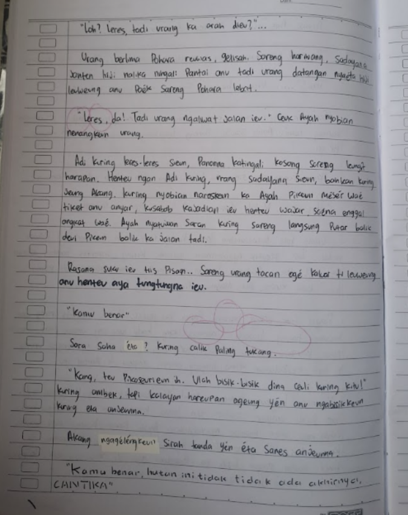
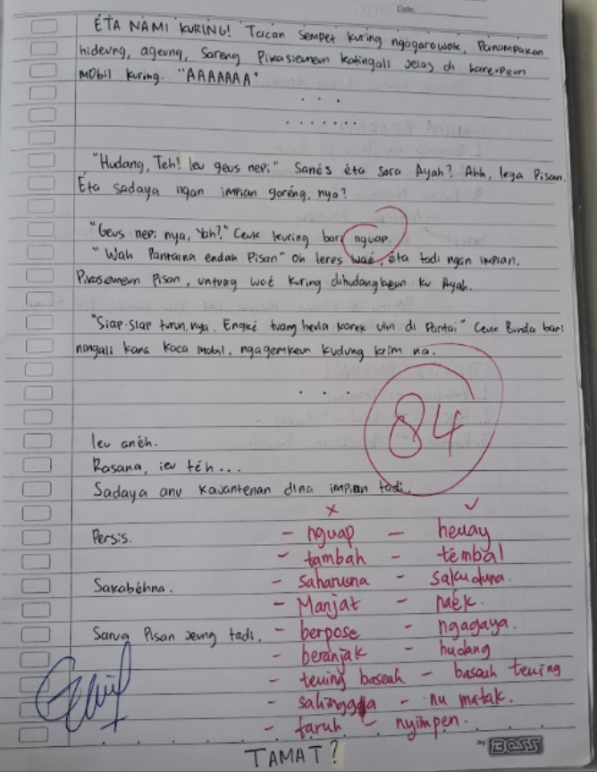
👤 Biografi
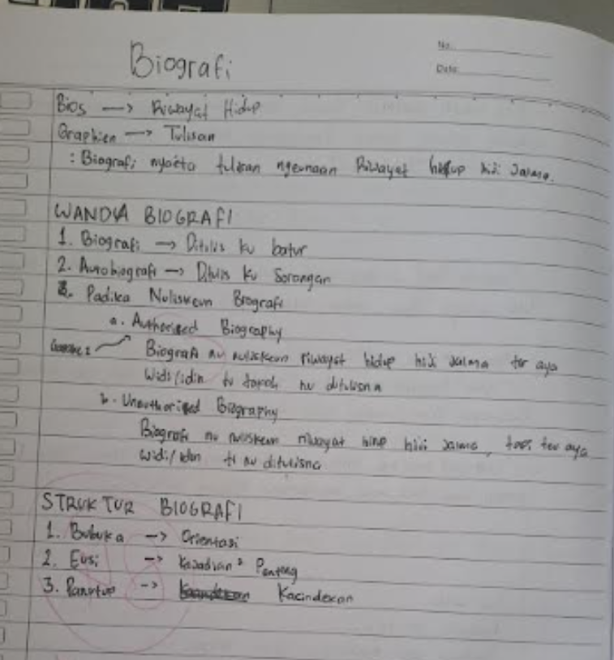
📝 Catatan
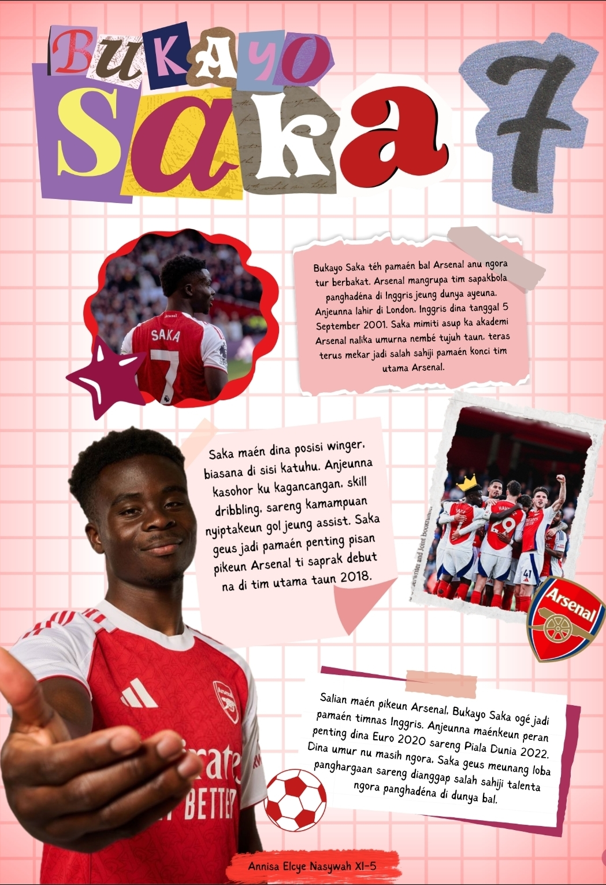
👤 Poster Biografi
📰 Warta
📢 Naon Ari Warta?
Warta nyaeta laporan informasi tina peristiwa atawa kejadian anu sipatna penting, jeung anyar (aktual) pikeun masyarakat réa, dipublikasikan dina kalawarta (Media Massa), sarta faktual dumasar kana kanyataan (Fakta).
Biasana warta téh sok dimuat dina média cétak atawa diumumkeun dina radio atawa TV. Jalma anu nyieunan warta disebut jurnalis atawa wartawan.
5W + 1H
What
Naon
Where
Di mana
Who
Saha
When
Iraha
Why
Naha
How
Kumaha
Kajadian Nu Ngandung Ajén Warta
- ⏰ Waktu (Timeline)
- 👥 Aya patalina jeung kahirupan balaréa (Significance)
- 😲 Anéh (Unusual)
- 📍 Kajadian anu deukeut jeung nu maca (Proximity)
- ⚔ Konflik (Conflict)
- ⭐ Hal-hal anu kasohor (Prominence)
- ❤️ Human Interest
Jenis Warta
📰 Straight News
Warta anu ditulis sacara langsung, singket, jeung lugas. Eusina ngan ukur ngalaporkeun kajadian atawa fakta tanpa analisis anu jero.
- Ngagunakeun piramida terbalik
- Ngajawab 5W+1H
- Objektif
- Basa lugas
- Langsung kana inti
Conto:
- Kacilakaan
- Konferensi Pers
🔍 Depth News
Warta anu ditulis sacara leuwih lengkep sarta leuwih jero.
- Aya analisis
- Ngagali sabab-akibat
- Wawancara
- Rupa-rupa sudut pandang
Conto:
- Investigasi
- Liputan husus hiji isu
🎥 Tugas Utama
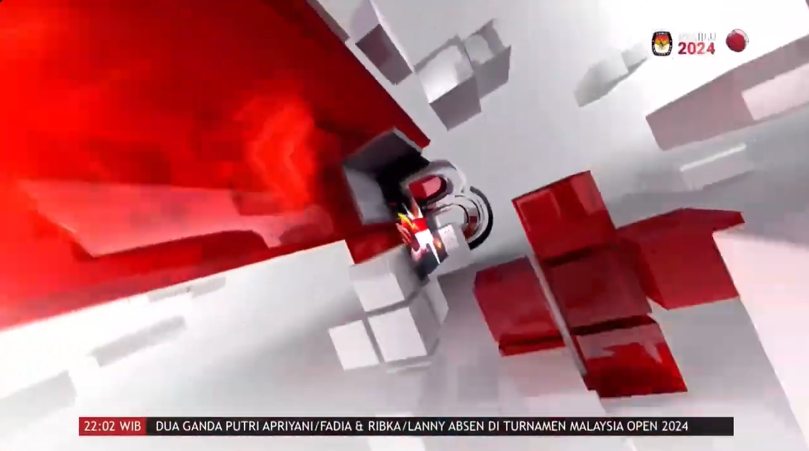
Klik gambar pikeun muka video tugas utama.
📝 Catatan
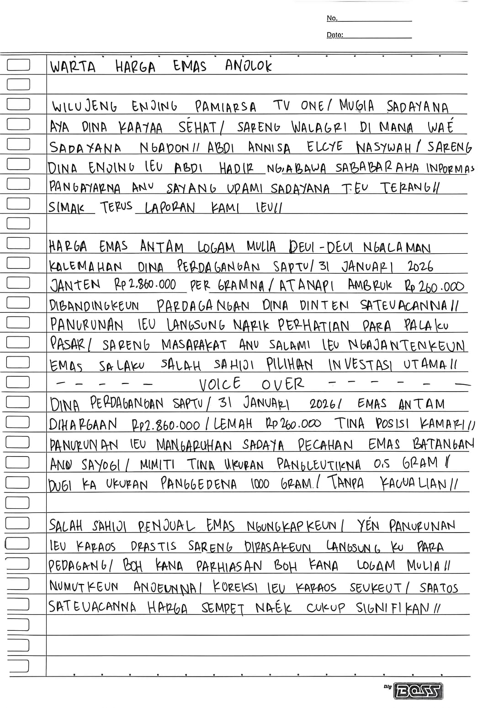
Halaman 1
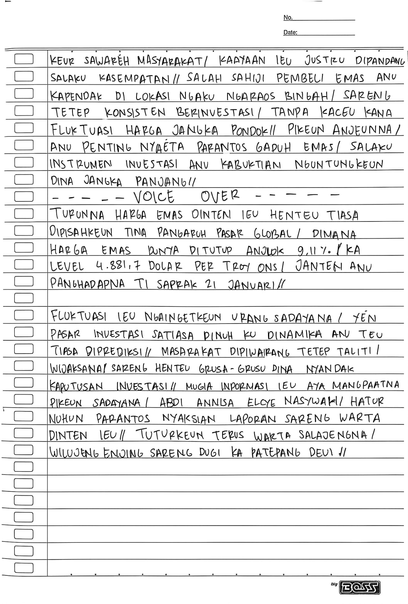
Halaman 2
📚 Tugas Tambahan
📜 Wawacan
📚 Materi Wawacan
Naon ari Wawacan?
Wawacan nya éta salah sahiji karya sastra Sunda dina wangun pupuh anu eusina nyaritakeun hiji lalakon atawa carita anu panjang. Wawacan biasana ditembangkeun atawa dibacakeun ku cara husus anu disebut beluk. :contentReference[oaicite:0]{index=0}
Ciri-ciri Wawacan
- 📜 Mangrupa carita atawa narasi anu panjang.
- 🎵 Dianggit maké aturan pupuh.
- 🗣️ Biasana ditembangkeun (beluk).
- 🌟 Ngandung piwuruk, ajén moral, atawa ajén agama.
- 📚 Kaasup kana karya sastra Sunda buhun.
📝 Catatan
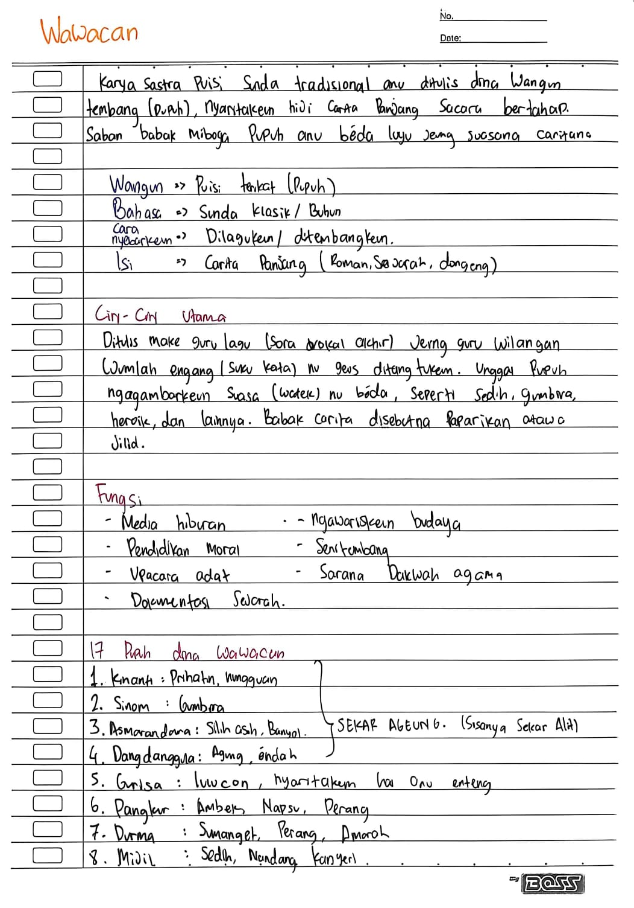
Halaman 1
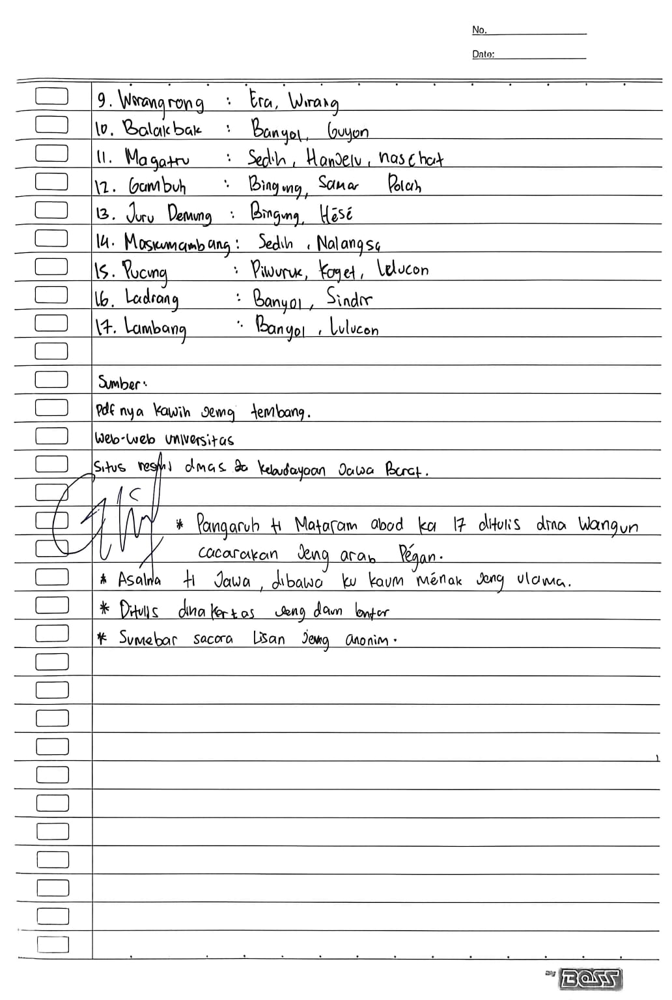
Halaman 2
🎥 Tugas Utama
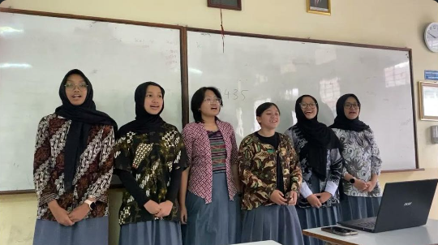
Klik gambar pikeun muka video tugas wawacan.
🎭 Sisindiran
📚 Materi Sisindiran
Naon ari Sisindiran?
Sisindiran nya éta salah sahiji karya sastra Sunda anu eusina ngandung sindiran, piwuruk, naséhat, atawa guyonan anu ditepikeun ku cara henteu langsung. Sisindiran kaasup kana puisi Sunda tradisional anu masih dipikawanoh ku masarakat Sunda nepi ka kiwari.
Ciri-ciri Sisindiran
- 🎭 Ngandung sindiran, naséhat, atawa piwuruk.
- 📝 Diwangun ku cangkang jeung eusi.
- 🎵 Miboga wirahma anu merenah lamun dibaca.
- 🌿 Maké basa anu éndah tur matak pikaresepeun.
- 📚 Kaasup kana sastra Sunda tradisional.
Wangun Sisindiran
- Paparikan → Wangunna sarupa jeung pantun.
- Rarakitan → Aya kecap anu diulang dina cangkang jeung eusi.
- Wawangsalan → Sisindiran anu wangunna siga tatarucingan.
📝 Catatan
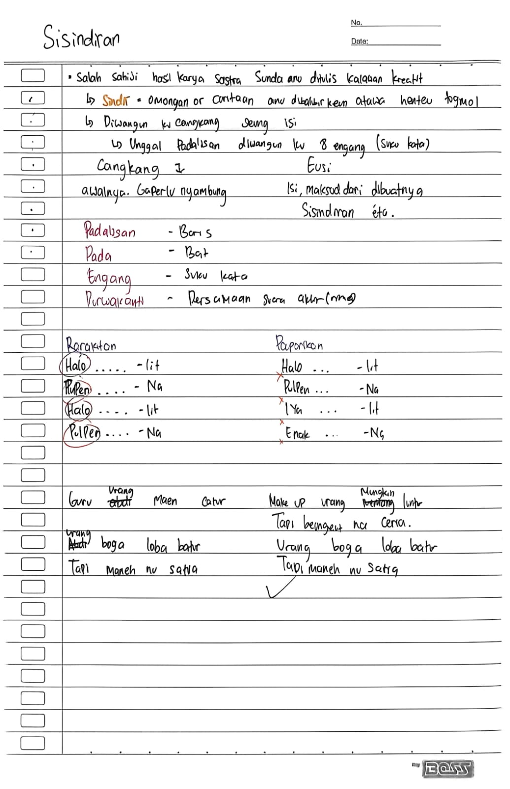
Catatan Sisindiran
🎥 Tugas Utama
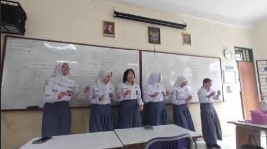
Klik gambar pikeun muka video tugas sisindiran.